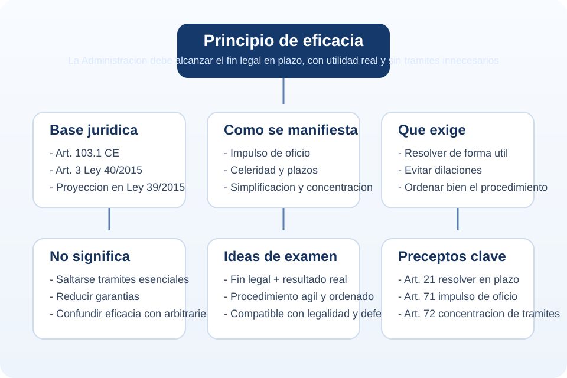

Eficacia
Se centra en alcanzar el resultado debido. La pregunta es: la actuacion administrativa ha servido para cumplir el fin legal?
Tema 1 - Punto 4.1
El principio de eficacia exige que la Administracion no se limite a tramitar formalmente un expediente, sino que actue de forma que el procedimiento sirva realmente para alcanzar el fin publico que la ley persigue, dentro de plazo, con orden, sin demoras inutiles y con una respuesta util para el ciudadano y para el interes general.
Idea central de examen: ser eficaz no es resolver de cualquier manera, sino obtener el resultado juridicamente debido con sometimiento pleno a la ley, a las garantias del procedimiento y a los derechos del interesado.

El principio de eficacia forma parte de los principios rectores de la actuacion administrativa. Desde la perspectiva del procedimiento, significa que la organizacion y la tramitacion deben orientarse a que la Administracion cumpla la finalidad legal que justifica su intervencion y lo haga de forma util, ordenada y tempestiva.
No basta con que el expediente exista y avance. La eficacia exige que el procedimiento produzca una decision valida, util y apta para satisfacer el interes general. Por eso conecta tanto con el contenido final de la resolucion como con la manera de tramitarla.
En oposiciones conviene entenderlo como un principio de doble vertiente: por un lado, obliga a la Administracion a actuar de verdad y no quedarse inerte; por otro, la obliga a actuar bien orientada, evitando formalismos vacios, duplicidades, retrasos y tramites que no aportan nada al resultado final.
El principio de eficacia no es una creacion doctrinal aislada. Tiene una base constitucional y legal directa.
| Norma | Contenido relevante | Importancia para este punto |
|---|---|---|
| Art. 103.1 CE | La Administracion sirve con objetividad los intereses generales y actua de acuerdo con el principio de eficacia. | Es el fundamento constitucional del principio. |
| Art. 3.1 Ley 40/2015 | Reitera la eficacia e incorpora ideas de agilidad, simplificacion, direccion por objetivos y evaluacion de resultados. | Conecta eficacia con organizacion, gestion y servicio efectivo a los ciudadanos. |
| Ley 39/2015 | Proyecta el principio sobre la tramitacion comun: plazos, impulso de oficio, concentracion de tramites, subsanacion y resolucion expresa. | Es la concrecion procedimental que interesa para estudio. |
El principio de eficacia se entiende bien si se vincula al servicio objetivo al interes general: la Administracion esta para resolver y servir, no para bloquear, duplicar o eternizar tramites.
La eficacia tambien enlaza con otros principios del art. 3 de la Ley 40/2015, como la simplicidad, claridad, proximidad a los ciudadanos, racionalizacion y agilidad. Todos ellos funcionan como expresiones complementarias de una misma exigencia: que la maquinaria administrativa produzca resultados juridicos utiles.
Uno de los errores mas frecuentes es mezclar estos conceptos como si fueran sinonimos. Estan relacionados, pero no significan exactamente lo mismo.
Se centra en alcanzar el resultado debido. La pregunta es: la actuacion administrativa ha servido para cumplir el fin legal?
Se fija en la relacion entre medios y resultados. Busca hacerlo bien con el menor coste o consumo posible de recursos.
Apunta a la rapidez en la tramitacion. Es un componente de la eficacia, pero no la agota.
Persigue que el procedimiento elimine pasos inutiles y agrupe tramites cuando sea posible.
De este modo, una actuacion puede ser rapida pero poco eficaz si resuelve mal o deja sin satisfacer el fin legal; tambien puede ser eficaz pero poco eficiente si consume recursos desproporcionados. En el procedimiento administrativo, el objetivo es la combinacion razonable de todas estas exigencias.
La Ley 39/2015 no suele formular el principio de eficacia en un unico articulo definitorio, sino que lo despliega a traves de tecnicas concretas de ordenacion del procedimiento.
En consecuencia, la eficacia no es una idea abstracta o retorica: aparece en la ley como mandato de configuracion procedimental. La estructura del procedimiento comun esta construida para que la Administracion pueda decidir de manera util y sin dilaciones indebidas.
La primera exigencia de eficacia es elemental: resolver. La inactividad administrativa frustra el fin del procedimiento y perjudica tanto al interes general como al administrado. Por eso la Ley 39/2015 impone la obligacion de dictar resolucion expresa y notificarla dentro del plazo maximo.
Esta exigencia enlaza con el deber de buena administracion: el ciudadano no solo tiene derecho a presentar solicitudes, sino a obtener una respuesta juridica.
El art. 71 de la Ley 39/2015 conecta el procedimiento con el principio de celeridad y dispone que se impulsara de oficio en todos sus tramites y a traves de medios electronicos, respetando transparencia y publicidad. Aqui la eficacia se traduce en una idea muy importante: la Administracion es la responsable principal de hacer avanzar el expediente.
Esto evita que el procedimiento quede paralizado por pura pasividad interna. La ley tambien exige guardar orden riguroso de incoacion en asuntos de naturaleza homogenea y atribuye responsabilidad directa a quienes tramitan el procedimiento por el cumplimiento de los plazos.
El art. 72 de la Ley 39/2015 dispone que, conforme al principio de simplificacion administrativa, se acordaran en un solo acto los tramites que admitan impulso simultaneo y no exijan cumplimiento sucesivo. Es una regla claramente funcional: si varios tramites pueden hacerse juntos, deben hacerse juntos.
Con ello se reducen tiempos muertos, notificaciones innecesarias y fragmentacion artificial del expediente.
El art. 68 de la Ley 39/2015 permite requerir la subsanacion de defectos en la solicitud. Desde la perspectiva de la eficacia, esta tecnica impide que errores formales reparables provoquen de entrada el fracaso del procedimiento. La idea no es premiar la informalidad, sino favorecer la decision sobre el fondo cuando ello sea juridicamente posible.
Los actos de instruccion se realizan de oficio por el organo que tramite el procedimiento. Esto significa que la Administracion debe reunir los elementos necesarios para una decision correcta. La eficacia no consiste solo en correr, sino en tramitar con la informacion suficiente para resolver bien.
El principio de eficacia tiene gran importancia, pero no es un superprincipio que permita ignorar el resto del ordenamiento. Debe convivir con legalidad, objetividad, igualdad, contradiccion, audiencia, motivacion y defensa.
| Lo que la eficacia permite | Lo que la eficacia no permite |
|---|---|
| Agilizar, simplificar, impulsar y ordenar el expediente. | Suprimir tramites esenciales o prescindir totalmente del procedimiento. |
| Corregir defectos subsanables y evitar formalismos vacios. | Desatender derechos de audiencia, prueba o alegaciones. |
| Priorizar una gestion util y orientada a resultados. | Resolver arbitrariamente o sin motivacion suficiente. |
Una Administracion no es mas eficaz por recortar garantias, sino por resolver mejor, antes y dentro de la ley.
Desde esta optica, la eficacia debe interpretarse como un principio de buena administracion: exige utilidad real de la actuacion publica, pero siempre dentro de las formas y garantias que el propio Estado de Derecho considera necesarias.
El principio de eficacia produce efectos practicos de gran interes para examen:
Ahora bien, su infraccion no siempre genera por si sola nulidad del acto. Habra que examinar si el defecto ha causado indefension, omision de tramite esencial, lesion de derechos o incumplimiento sustancial de la legalidad procedimental.
En todos estos casos debes razonar siempre igual: identificar el fin del procedimiento, analizar si la tramitacion ha sido apta para alcanzarlo y comprobar si se han respetado las garantias que la ley impone.
Debes definirlo como la exigencia de que la Administracion oriente su actuacion a la consecucion efectiva del fin legal, mediante una tramitacion util, agil y ordenada, con sometimiento a la ley y al Derecho.
En el art. 103.1 de la Constitucion y en el art. 3 de la Ley 40/2015; en la Ley 39/2015 se manifiesta en reglas como la resolucion en plazo, el impulso de oficio y la concentracion de tramites.
No. La eficacia no legitima la supresion de tramites esenciales ni la indefension. Es un principio de mejor administracion dentro de la legalidad, no una excusa para apartarse de ella.
La eficacia se refiere al cumplimiento del fin; la eficiencia, al empleo racional de los medios para alcanzar ese fin.
Definicion util: el principio de eficacia obliga a la Administracion a conducir el procedimiento de manera que se alcance el resultado legalmente debido, con una respuesta expresa, en plazo, por medio de una tramitacion ordenada, agil y util para el interes general.
Formula corta para retener: eficacia es resolver bien, a tiempo y conforme a Derecho.
Esta pagina sintetiza el principio de eficacia desde una perspectiva de estudio, tomando como eje el marco constitucional y la regulacion del procedimiento administrativo comun.